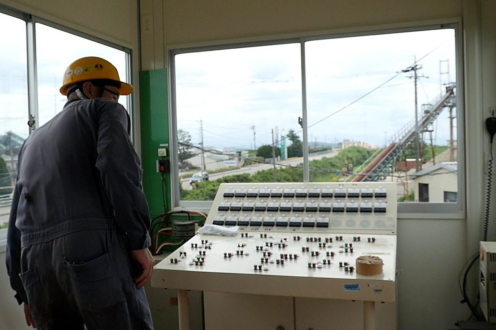
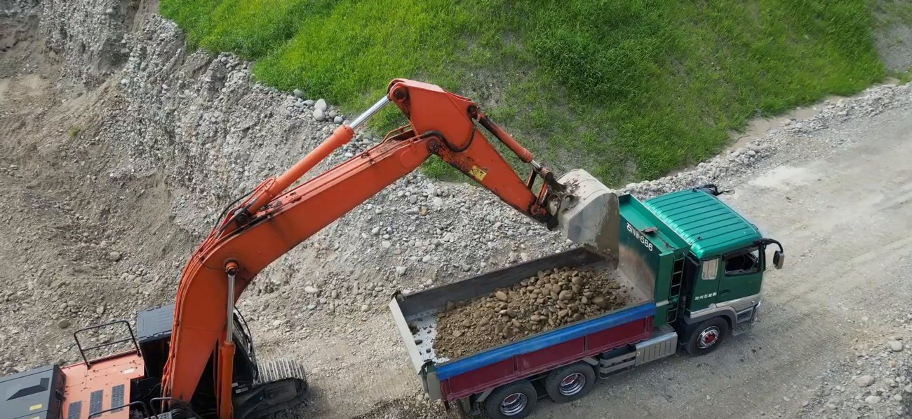
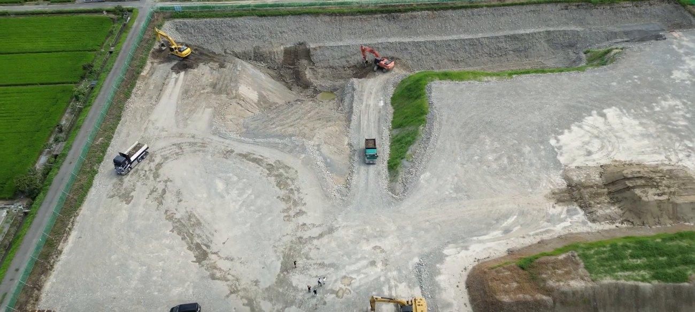
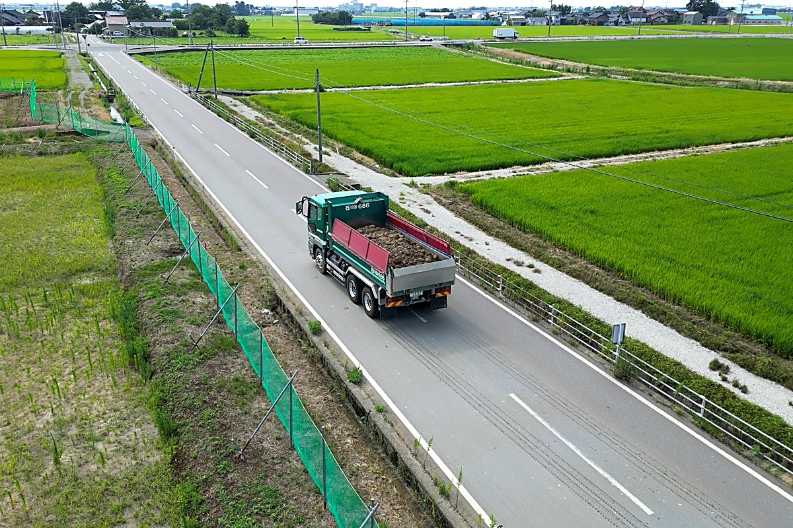
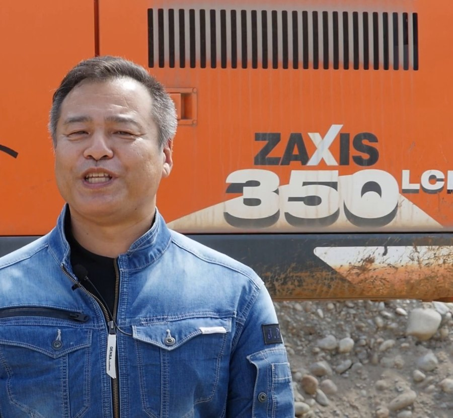

株式会社砂利プラント 採用情報
このまちの土台を、
足もとからつくる。
石川県・川北町の砂利プラントで、建設の原料となる砕石・砂利をつくっています。派手ではないけれど、道路も、建物も、この仕事がなければ始まらない。長く腰を据えて働ける仲間を募集しています。
About us
数字で見る、砂利プラントの働きかた
社員およそ10名の少人数の会社です。だからこそ、一人ひとりの仕事がそのまま会社の力になります。長く働く人が多いのも、この会社の特徴です。
The work
仕事内容
砂利・砂を採り、砕いて、建設現場で使える砕石・骨材に仕上げる。その一連の流れを、少人数で分担しています。はじめは先輩について覚えていくので、未経験でも大丈夫です。

プラントの運転・製造
砕石プラントを動かし、原石を砕いてサイズごとの製品（砕石・砂利・砂）に仕上げます。設備の点検や簡単な整備も仕事のうちです。

重機オペレーション
ホイールローダーで製品を積み込み、油圧ショベルで原料を積み込みます。必要な免許は、入社後の取得支援制度で取れます。

採取現場（陸掘）作業
島田・福留など、時期によって変わる採取現場で、砂利・砂を掘り出す作業を担います。自然を相手にした、ダイナミックな仕事です。

運搬・出荷
できあがった製品をダンプで現場やお客様へ。加州石産株式会社・株式会社みはま産業・石川インペラ工業株式会社・株式会社舟場組など、20年来のパートナー企業と連携して地域の建設を支えます。
毎日の積み重ねが、まちをつくる。
原石を砕き、ふるい分け、運ぶ。一つひとつの工程を確実にこなすことで、石川の建設現場に欠かせない素材が生まれます。
Benefits
待遇・働く環境
小さな会社ですが、働く人を守るしくみはきちんと整えています。社会保険はもちろん、将来の備えや日々の暮らしまで。
社会保険 完備
健康保険（協会けんぽ）・厚生年金・雇用保険・労災保険にすべて加入。
賞与 年2回
最低2ヶ月分〜。業績・成績に応じて増額します。残業代は全額支給。
退職金の備え
中小企業退職金共済（中退共）に加入。会社が将来の備えを後押しします。
免許取得支援
大型免許・重機免許などの取得を会社が支援。未経験から手に職をつけられます。
各種手当
通勤手当は全額支給。ほかに家族手当・資格手当・現場手当・工場手当。
財形・互助会・旅行積立
財形貯蓄・互助会に加え、社員旅行の積立も。暮らしと楽しみの両方を支えます。
休日・休暇
週休2日制、年間休日105日。夏季休暇・年末年始休暇もあります。
有給休暇
法定どおり付与。1時間単位でも取得できるので、用事や通院にも使いやすい。
未経験から歓迎
先輩がゼロから丁寧に指導。昇給ペースが早く、頑張りがしっかり評価されます。
Why here
長く働ける、3つの理由

辞めない職場
15年以上働くメンバーが複数。人の入れ替わりが少なく、腰を据えて技術を積める環境です。少人数だからこそ、一人ひとりが大切にされます。
景気に強い仕事
砕石・砂利は、道路も建物も河川工事も、建設には欠かせない素材。流行に左右されにくく、地域にずっと必要とされ続ける仕事です。
安定したグループ基盤
加州石産株式会社・株式会社みはま産業・石川インペラ工業株式会社・株式会社舟場組とともに、長年にわたり地域の建設を支えてきました。安定した経営基盤の上で、待遇や制度を着実に整えています。
Company
会社概要
| 社名 | 株式会社砂利プラント |
|---|---|
| 所在地 | 〒923-1276 石川県能美郡川北町字橘ケ8番地 |
| 代表者 | 代表取締役 髙木 太平 ／ 明翫 紀夫 ／ 土井原 弘 ／ 辰野 直樹 |
| 事業内容 | 砕石・砂利・砂の製造・販売／製品・原料の運搬／陸砂利の採取・残土の受入 |
| 従業員数 | 約10名 |
| 連携先 | 加州石産株式会社／株式会社みはま産業／石川インペラ工業株式会社／株式会社舟場組 |
| 資本金 | 800万円 |
| 法人番号 | 1220001011527 |
| 設立 | 2009年（平成21年）4月1日 2026年12月期で第18期 |
| お問い合わせ | TEL 076-277-1220／携帯 080-4250-9041 |
マイカー通勤OK（通勤手当全額支給）。見学はお気軽にご相談ください。
FAQ
よくある質問
未経験ですが応募できますか？
どんな休みですか？
将来の備え（退職金）はありますか？
社会保険は入れますか？
応募の条件はありますか？
給与や試用期間について教えてください。
Requirements
募集要項
| 募集職種 | 骨材製造プラントエンジニア プラント運転／重機オペレーター／大型ダンプ運転 |
|---|---|
| 仕事内容 | 砕石・砂利・砂の製造販売。プラントの運転管理・点検整備を中心に、経験や希望に応じて重機操作（ホイールローダー・油圧ショベル）や大型ダンプでの運搬もお任せします。 |
| 雇用形態 | 正社員（中途採用・正社員登用あり） |
| 給与 | 月給 310,000円 〜 330,000円 経験・能力を考慮して決定／昇給あり／みなし残業なし・残業代全額支給 |
| 想定年収 | 4,300,000円 〜 4,500,000円 |
| 賞与 | 年2回・最低2ヶ月分〜（業績・成績に応じて増額） |
| 勤務時間 | 8:00 〜 17:00（実働7時間30分・固定時間制） |
| 休日休暇 | 週休2日制／年間休日105日／夏季休暇・年末年始休暇／有給休暇（1時間単位で取得可） |
| 試用期間 | 3ヶ月（雇用形態・給与は本採用時と同じ） |
| 応募資格 | 学歴不問・業界未経験OK（経験者・各種免許保有者は優遇） |
| 待遇・福利厚生 | 社会保険完備（健保・厚年・雇用・労災）／通勤手当全額／家族手当・資格手当・現場手当・工場手当／免許取得支援（大型・重機免許など）／中小企業退職金共済（中退共）／財形貯蓄・互助会・社員旅行積立 |
| 勤務地 | 石川県能美郡川北町字橘ケ8番地（転勤なし） |
| 選考の流れ | ご応募 → 面接 → 内定（内定まで1〜2週間） |
陸砂利採取現場での重機作業（掘削・積込）が中心の、経験者向けコースです。
- 給与 月給 300,000円 〜 320,000円（想定年収 4,000,000円〜4,250,000円）
- 応募資格 学歴不問・経験者募集（重機免許保有／ホイールローダーWA320クラス以上・油圧ショベルPC200クラス以上の操作経験を歓迎）
- 仕事内容 陸砂利採取現場での掘削・製品/原材料の積込。必要に応じてプラント業務。
- その他 勤務地・勤務時間・休日・社会保険・各種手当は上記と同じ。試用期間経過後に現場手当を追加支給。
Entry
まずは、話を聞きにきませんか
「自分にできるかな」という段階でも大丈夫です。仕事の様子を見学するだけでも歓迎します。お気軽にご連絡ください。
受付時間：平日・土曜（第2・第4を除く）7:00〜17:00
「まず話を聞きたい・見学だけ」も歓迎します。